Scenario-centric coverage, transaction, payload, protocol, and switching analysis built from UVM logs plus VDB data.
Generated at 2026-04-20 06:40:38.
Synopsys URG group report: ../urg_report/dashboard.html
Coverage quality, transaction capacity, cumulative contribution, and scenario capability shape.
Per-scenario functional coverage percentage with point counts.
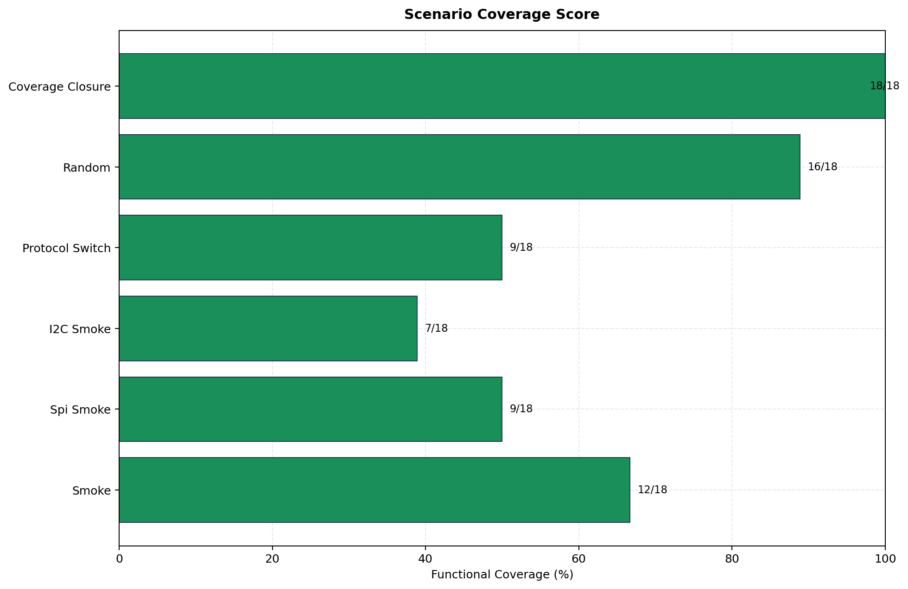
PASS/FAIL ratio across the selected regression set.
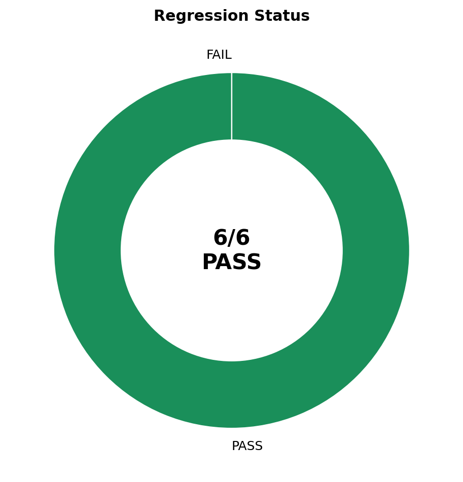
Matched transaction count with transaction density overlay.
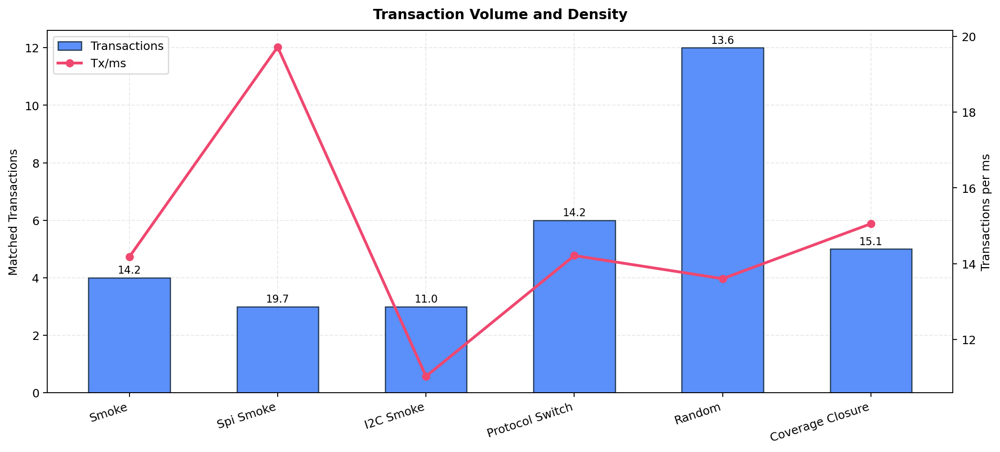
How each scenario contributes new functional points to the merged regression result.
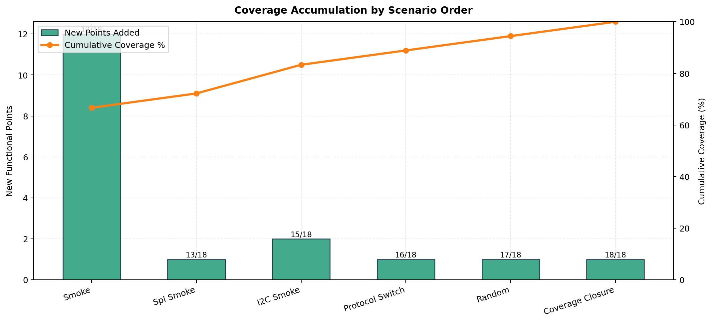
Coverage, traffic volume, protocol span, payload span, and switching richness compared together.
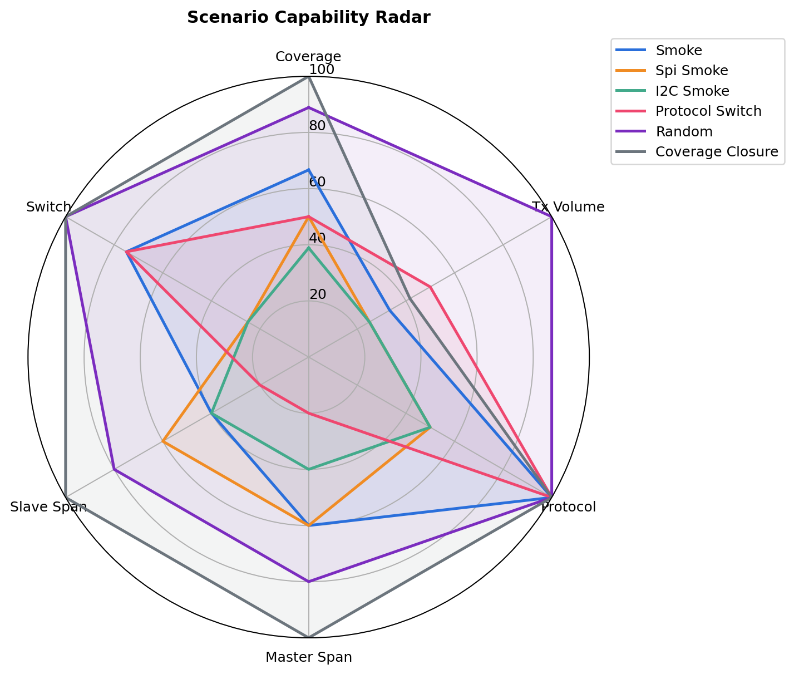
Protocol ratio, payload category mix, transaction timing, and average payload intensity.
SPI vs I2C transaction share for every scenario.
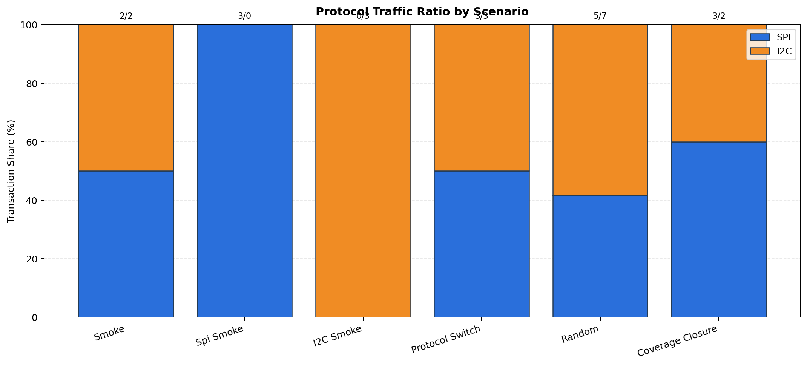
Master-side control payload composition across zero/low/mid/high/max bins.
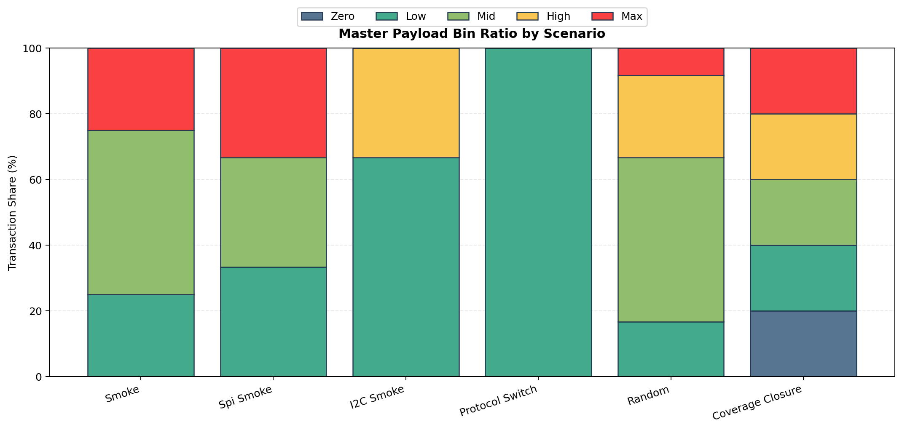
Slave-side switch payload composition across zero/low/mid/high/max bins.
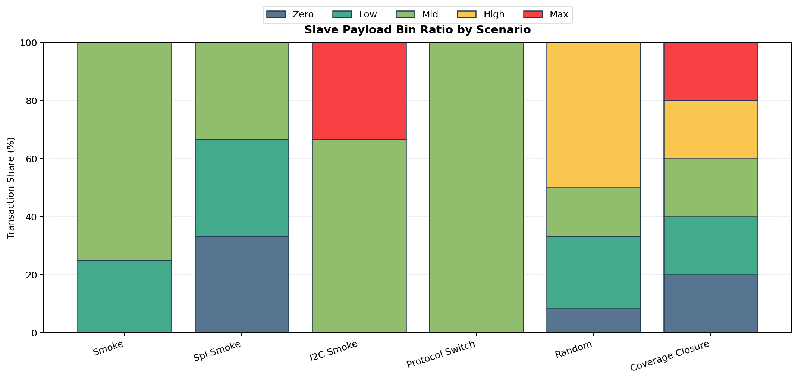
Transaction sample times, protocol color, and toggle-aware markers.
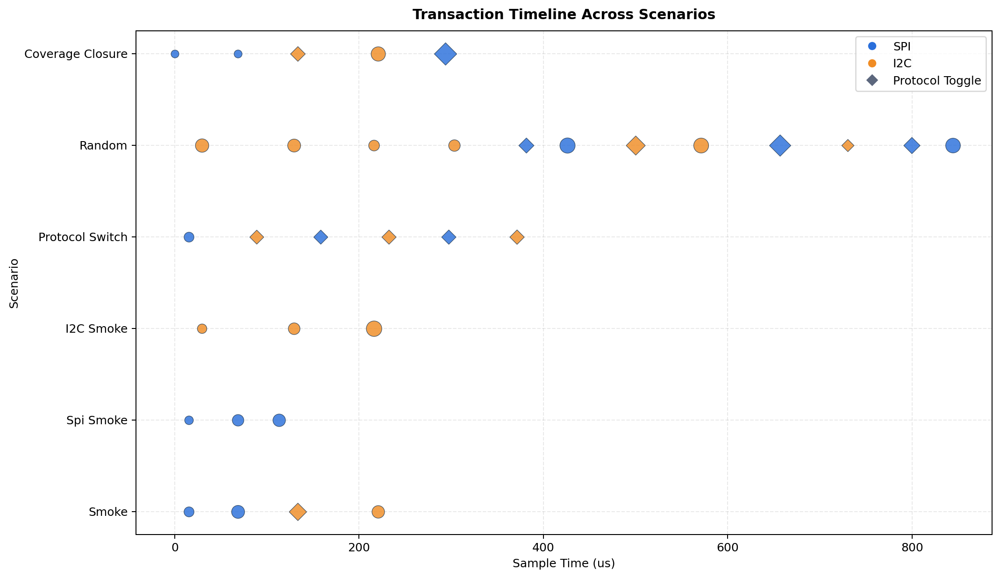
Average master/slave payload position, bubble-sized by transaction count.
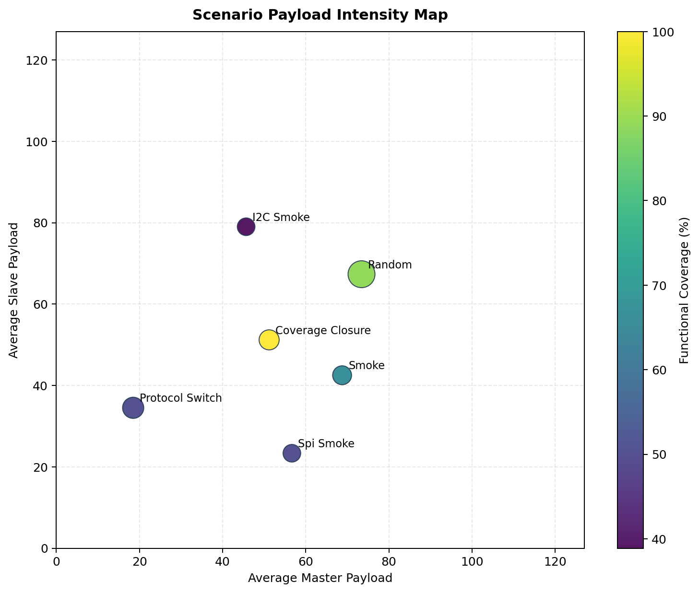
Dimension-level coverage depth, protocol-switch cross hits, integrated breakdown, and point-level hit map.
Percent coverage for each coverpoint and cross dimension by scenario.
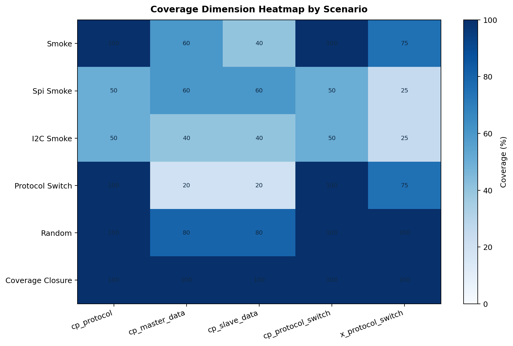
Scenario-by-scenario hit counts for SPI/I2C hold/toggle combinations.
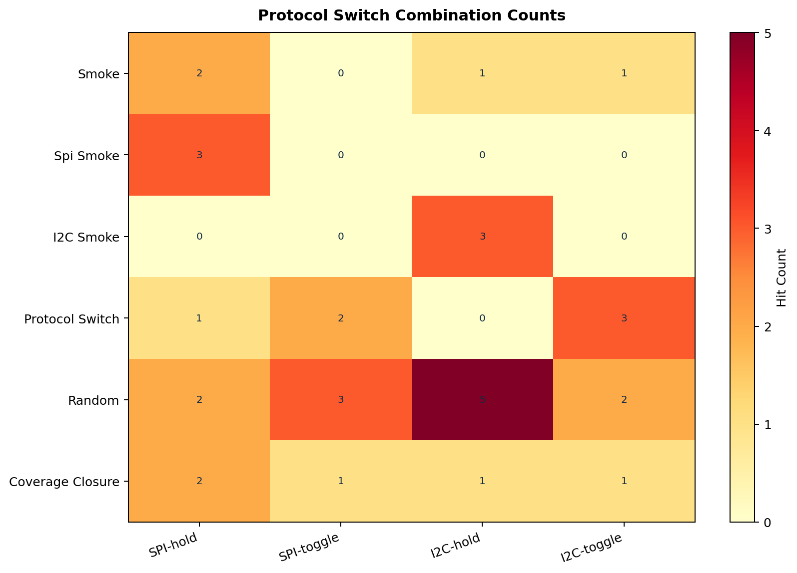
Merged regression result by dimension, covered versus missing points.
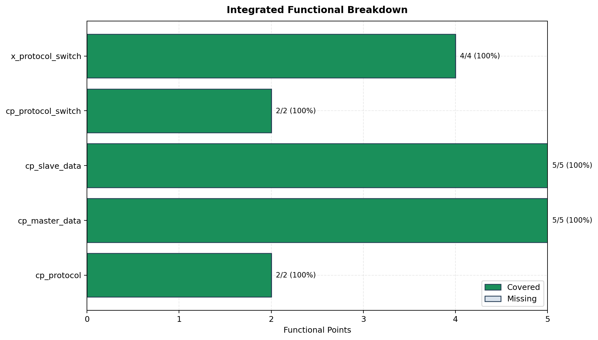
Hit or miss view for every functional point against every scenario.
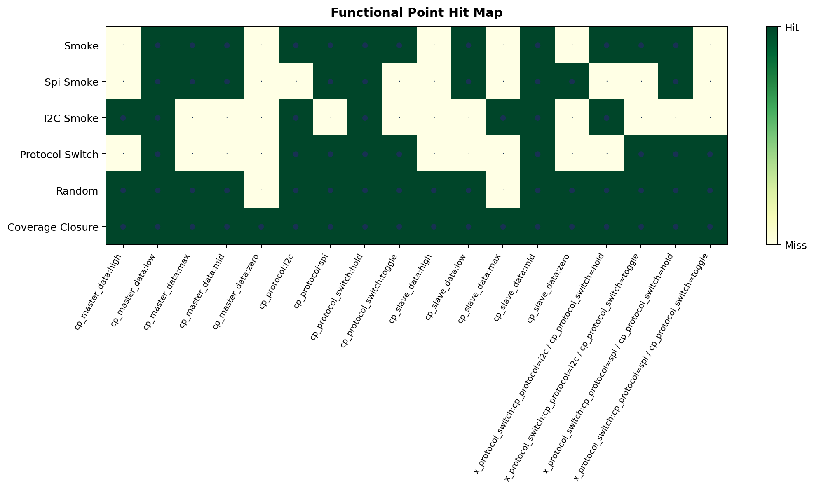
Console-grade numeric detail captured into a report-friendly matrix.
Status, coverage, traffic split, switching frequency, timing, payload intensity, and file traceability.
| Scenario | Status | Matched | Points | Coverage | SPI/I2C | Switches | Sim (us) | Tx/ms | Avg M/S | Master/Slave Span | Log |
|---|---|---|---|---|---|---|---|---|---|---|---|
| serial_loopback_smoke_test | PASS | 4/4 | 12/18 | 66.7% | 2/2 | 1 | 282.1 | 14.2 | 68.8 / 42.5 | 60% / 40% | /home/hedu34/UVM_SERIAL/out/uvm/logs/serial_loopback_smoke_test.log |
| serial_loopback_spi_smoke_test | PASS | 3/3 | 9/18 | 50.0% | 3/0 | 0 | 152.1 | 19.7 | 56.7 / 23.3 | 60% / 60% | /home/hedu34/UVM_SERIAL/out/uvm/logs/serial_loopback_spi_smoke_test.log |
| serial_loopback_i2c_smoke_test | PASS | 3/3 | 7/18 | 38.9% | 0/3 | 0 | 272.1 | 11.0 | 45.7 / 79.0 | 40% / 40% | /home/hedu34/UVM_SERIAL/out/uvm/logs/serial_loopback_i2c_smoke_test.log |
| serial_loopback_protocol_switch_test | PASS | 6/6 | 9/18 | 50.0% | 3/3 | 5 | 422.1 | 14.2 | 18.5 / 34.5 | 20% / 20% | /home/hedu34/UVM_SERIAL/out/uvm/logs/serial_loopback_protocol_switch_test.log |
| serial_loopback_random_test | PASS | 12/12 | 16/18 | 88.9% | 5/7 | 5 | 882.1 | 13.6 | 73.4 / 67.3 | 80% / 80% | /home/hedu34/UVM_SERIAL/out/uvm/logs/serial_loopback_random_test.log |
| serial_loopback_coverage_closure_test | PASS | 5/5 | 18/18 | 100.0% | 3/2 | 2 | 332.1 | 15.1 | 51.2 / 51.2 | 100% / 100% | /home/hedu34/UVM_SERIAL/out/uvm/logs/serial_loopback_coverage_closure_test.log |
Merged functional result grouped by coverpoint/cross dimension.
| Covergroup | Dimension | Kind | Covered | Coverage |
|---|---|---|---|---|
| serial_loopback_coverage::loopback_cg | cp_protocol | coverpoint | 2/2 | 100.0% |
| serial_loopback_coverage::loopback_cg | cp_master_data | coverpoint | 5/5 | 100.0% |
| serial_loopback_coverage::loopback_cg | cp_slave_data | coverpoint | 5/5 | 100.0% |
| serial_loopback_coverage::loopback_cg | cp_protocol_switch | coverpoint | 2/2 | 100.0% |
| serial_loopback_coverage::loopback_cg | x_protocol_switch | cross | 4/4 | 100.0% |